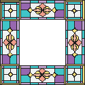
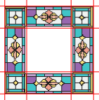
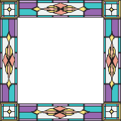
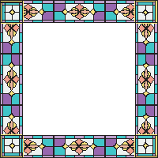
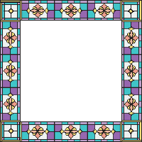
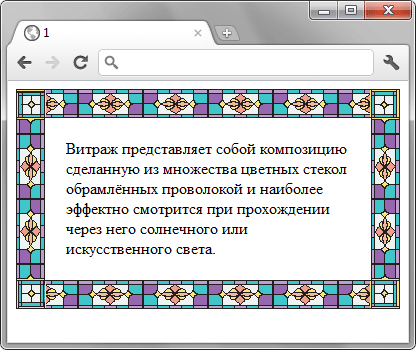

border-image
Используется для отображения рисованной рамки вокруг элемента. Толщина рамки задаётся свойством border, при этом если указано border: 0, то рамка не выводится. При других значениях border рисунок всегда имеет приоритет. Фон, если он задан через свойство background, отображается под рамкой.
Краткая информация
| Значение по умолчанию | none |
|---|---|
| Наследуется | Нет |
| Применяется | Ко всем элементам, за исключением тех, у кого border-collapse задан как collapse |
Синтаксис
border-image: none | [ <URL> [<число> | <проценты>]{1,4} [/ <толщина>{1,4}]? ] &&
[stretch | repeat | round]{0,2}Значения
- none
- Не отображает рисованную рамку, используется установленный стиль границы.
- URL
- Путь к графическому файлу. Обязательный параметр.
Само изображение для создания рамки продемонстрировано на рис. 1 и состоит из девяти областей: четырёх уголков, верхней, правой, нижней, левой стороны и центральной части, в которой выводится содержимое элемента.

Рис. 1. Изображение для создания рамки
- <число>
-
Одно, два, три или четыре значения, которые указывают размеры частей изображения в пикселях, задавая тем самым области деления. Сами единицы не пишутся, только число (10, а не 10px).На рис. 2 красными линиями выделены необходимые для создания рамки области.

Рис. 2. Деление исходного изображения на области
Разрешается использовать одно, два, три или четыре значения, разделяя их между собой пробелом. Эффект зависит от количества значений и приведен в табл. 1.
Табл. 1. Зависимость от числа значений Число значений Результат 1 Устанавливает границы одинаковой толщины на каждой стороне рисунка. 2 Первое значение устанавливает высоту верхней и нижней границы, второе — левой и правой. 3 Первое значение определяет высоту верхней границы, второе — левой и правой, а третье — высоту нижней границы. 4 Поочерёдно устанавливается размеры верхней, правой, нижней и левой границы. - <проценты>
- Аналогично <числу>, но значения задаются в процентах. Тот или другой параметр обязателен.
- <толщина>
- Через слэш пишется одно, два, три или четыре значения толщины границы на каждой стороне элемента. Является аналогом border-width и использует тот же синтаксис.
- stretch
- Растягивает рисунок границы до размеров элемента. Это значение используется по умолчанию.
- repeat
- Повторяет рисунок границы.
- round
- Повторяет рисунок и масштабирует его так, чтобы на стороне элемента оказалось целое число изображений.
Влияние этих параметров на вид рамки показано на рис. 3.
|  |  |  |
| stretch | repeat | round |
Рис. 3. Результат использования параметров stretch, repeat и round
Пример
<!DOCTYPE html>
<html>
<head>
<meta charset="utf-8">
<title>border-image</title>
<style>
div {
border: 30px solid #40c4c8;
padding: 20px;
border-image: url(images/bg-image.png) 30 round round;
}
</style>
</head>
<body>
<div>Витраж представляет собой композицию сделанную из
множества цветных стекол обрамлённых проволокой и наиболее
эффектно смотрится при прохождении через него солнечного
или искусственного света.</div>
</body>
</html>Результат примера показан на рис. 1.

Рис. 4. Вид рамки в браузере Chrome
Объектная модель
Объект.style.borderImage
Примечание
Firefox до версии 15.0 поддерживает свойство -moz-border-image.
Safari до версии 6.0, Chrome до версии 15.0, Android до версии 4.0 поддерживают свойство -webkit-border-image.
Opera до версии 15.0 поддерживает свойство -o-border-image.
Спецификация
| Спецификация | Статус |
|---|---|
| CSS Backgrounds and Borders Module Level 3 | Возможная рекомендация |
Браузеры
| Internet Explorer | Chrome | Opera | Safari | Firefox | ||||
| 11 | 7 | 16 | 10.5 | 15 | 3 | 6 | 3.5 | 15 |
| Android | Firefox Mobile | Opera Mobile | Safari Mobile | ||||
| 2.1 | 4 | 3.5 | 15 | 11 | 16 | 3.2 | 6 |